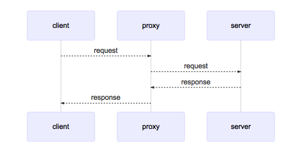
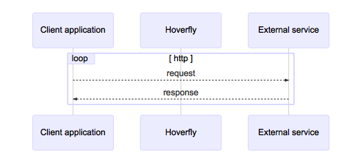
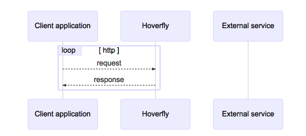

在说明什么是服务虚拟化前，先介绍另外两个常见的概念：
Mock
Mock 代指那些仅记录它们的调用信息的对象，在测试断言中我们需要验证 Mock 被进行了符合期望的调用。当我们并不希望真的调用生产环境下的代码或者在测试中难于验证真实代码执行效果的时候，我们会用 Mock 来替代那些真实的对象。
Mock 典型的例子即是对邮件发送服务的测试，我们并不希望每次进行测试的时候都发送一封邮件，毕竟我们很难去验证邮件是否真的被发出了或者被接收了，我们更多地关注于邮件服务是否按照我们的预期在合适的业务流中被调用。
Stub
Stub 代指那些包含了预定义好的数据并且在测试时返回给调用者的对象。Stub 常被用于我们不希望返回真实数据或者会造成其他副作用的场景。
Stub 的典型应用场景即是当某个对象需要从数据库获取数据时，我们并不需要真正地与数据库进行交互，而是直接返回预定义好的数据。
服务虚拟化
服务虚拟化技术可以让你创建一个模拟外部服务行为的应用程序，但是无需实际运行或者连接到外部服务。与 mock 或者 stub 相比，服务虚拟化技术可以管理更复杂的服务行为。
服务虚拟化更像一种智能的 mock 或者 stub，非常适合内部逻辑复杂但接口定义良好，数据响应简单的服务。
Hoverfly
Hoverfly 是一款比较新的服务虚拟化工具，可以模拟遗留系统复杂的响应，以及支持许多服务相互依赖的微服务架构。Hoverfly 使用 Go 语言编写，轻量、高性能。
Hoverfly 有非常丰富的功能和使用场景，今天我们仅介绍 Hoverfly 作为代理服务器时的两种常用模式：Capture 模式 和 Simulate 模式。
安装
1 | ➜ brew install SpectoLabs/tap/hoverfly |
启动
Hoverfly 带有一个称为 hoverctl 的命令行工具。
1 | ➜ hoverctl start |
可以看到默认情况下， Hoverfly 的代理服务运行在 8500 端口，后台页面运行在 8888 断口。
状态检查
1 | ➜ hoverctl status |
Hoverfly 作为代理服务器

如图所示，Hoverfly 最常见的使用场景是作为一个代理服务器在客户端和服务器之间传递请求。默认情况下，Hoverfly 作为代理服务器启动。
代理服务器 VS Web服务器
Hoverfly 还可以作为 Web服务器启动，这个不作为本文的重点，在这里简单对代理和Web服务器做个区分：
代理服务器是一种特殊的Web服务器，二者主要区别在于：当Web服务器接收到来自客户端的请求时，它以预期的响应内容（例如HTML页面）进行响应。 通常，响应的数据存放在该服务器上或同一网络中。
代理服务器应将传入的请求转发到另一台服务器（目标），同时，它还需要设置一些适当的头信息，如 X-Forwarded-For、X-Real-IP、X-Forwarded-Proto 等。一旦代理服务器从目标接收到响应，再由它回传给客户端。
捕获（Capture）模式
捕获模式用于创建 API 模拟数据。

在捕获模式下，Hoverfly 拦截客户端和外部服务之间的通信，并透明地记录来自客户端的传出请求和来自服务 API 的传入响应（类似于一个中间人）。
通常，捕获模式被用作创建 API 模拟过程的起点， 然后将捕获的数据导出并修改，再重新导入到 Hoverfly 中以用作后续的模拟。
默认情况下，如果请求未更改，Hoverfly 将忽略重复的请求。 所以尝试捕获有状态的端点可能会出现问题，因为每次发出请求时，该端点可能会返回不同的响应。当然，也可以通过配置禁用重复请求检查，所捕获的重复请求在仿真模式时会被循序使用。
仿真（Simulate）模式
在仿真模式下，Hoverfly 使用其模拟数据来仿真外部API。 每次 Hoverfly 收到请求时，它都会使用之前捕获到的数据进行响应（而不是将其转发到真实的服务）。 没有网络流量会到达真正的外部服务。

仿真数据可以通过在捕获模式下运行 Hoverfly 自动生成，也可以手动创建。
示例
我们通过 curl 命令来做一个完整的演示。
http://time.jsontest.com/ 是一个可以提供当前时间的 API 端点：
1 | ➜ curl -s http://time.jsontest.com/ | jq |
通过 hoverctl 将 Hoverfly 切换到捕获模式：
1 | ➜ hoverctl mode capture |
进入捕获模式后，我们再次想上边的 API 发出一个请求，不过这次指定 Hoverfly 作为代理：
1 | ➜ curl -s --proxy http://localhost:8500 http://time.jsontest.com | jq |
通过指定 proxy 参数，请求会首先转到代理，也就是 Hoverfly，然后再被转发到真正的 API 服务。响应的接收过程也是类似，这是 Hoverfly 拦截网络流量的方式。可以通过 Hoverfly 的日志了解具体发生了什么。
1 | ➜ hoverctl logs |
切换到仿真模式：
1 | ➜ hoverctl mode simulate |
在仿真模式下，Hoverfly 会使用我们之前记录下来的请求来对客户端进行响应，而不是将流量转发到真正的 API。
现在我们继续以 Hoverfly 为代理，重复发起之前的请求：
1 | ➜ curl -s --proxy http://localhost:8500 http://time.jsontest.com | jq |
返回的数据与我们在捕获模式下请求的结果相同。
接下来，如果我们想在客户端中模拟一个 100 年之后的响应，可以之前将捕获到的数据进行导出，重新编辑后导入 Hoverfly：
1 | ➜ hoverctl export simulation.json |
查看 simulation.json` 的内容：
1 | { |
找到其中的body 字段，将其修改为：
1 | "body": "{\n \"date\": \"06-27-2120\",\n \"milliseconds_since_epoch\": 1593247241163,\n \"time\": \"08:40:41 AM\"\n}\n", |
将仿真数据导入 Hoverfly：
1 | ➜ hoverctl import simulation.json |
再次发送请求：
1 | ➜ curl -s --proxy http://localhost:8500 http://time.jsontest.com | jq |
时间快进到了 100 年后。
到这里，我们已经成功模拟了一个API端点，虽然我们这次演示了 curl 命令，但是在时间的测试中，应该由正在测试的应用程序向 Hoverfly 发起请求。一旦 Hoverfly 存储了请求和响应的数据，我们就不再需要访问真正的服务了，可以控制 Hoverfly 返回准确的响应。
最后
Hoverfly 还有一个可视化的管理页面，可以访问：http://localhost:8888/ 来进行查看，也可以通过这个界面来进行模式间的切换。
因为 hoverctl 提供了比较友好的交互命令，所以这个页面的用途不是太大。
结尾
使用 Hoverfly 这样的虚拟服务化工具，主要的好处是资源占用少、初始化速度快，因此我们可以在开发电脑上虚拟化出比实际更多的服务，也可以快速集成测试中使用的 Hoverfly。